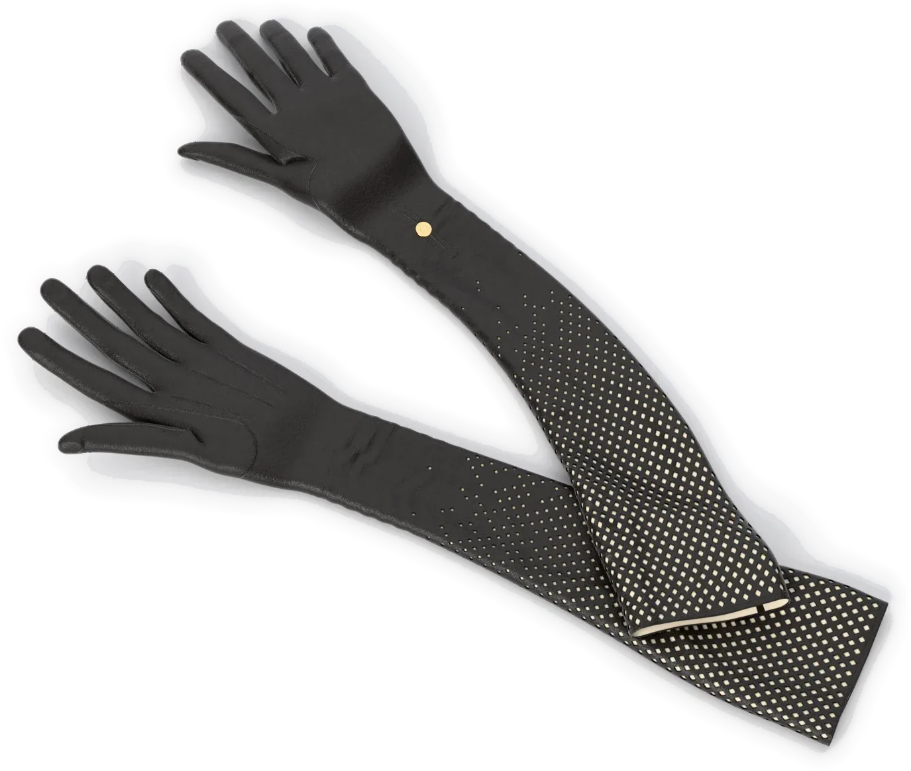
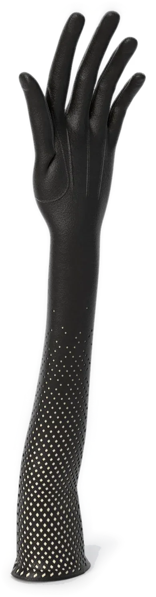

Chapter I · Accessories
Ritornelo
Opera gloves

STAND-IN · img/ritornelo/front/master.* (departments/apparel/new-pieces-2026-11/build/opera-gloves/site/opera_gloves_front_16k.png; 16K, 15360 × 8640)front

STAND-IN · img/ritornelo/three-quarter/master.* (three-quarter view, 8K; 8K, 7680 × 4320)three quarter
Chapter I
Ritornelo
Opera gloves
Black lambskin past the elbow, cut with the Veil Coat's net: closed at the wrist and opening as it climbs the arm, cream silk inside. A gold snap with the Ö.
- LEATHER
- BLACK LAMBSKIN
- LINING
- CREAM SILK
- LENGTH
- ABOVE THE ELBOW
- SNAP
- GOLD, THE Ö ENGRAVED
- SIZE
- S · M · L
USD 1,050 pre-sale USD 900
Made to order.
Keep a seatThe register sees the pre-sale first.
Details
- Pre-sale
- Made to order. We email your delivery date once production is confirmed. Cancel for a full refund any time before production starts.
- Returns
- Exchanges within 14 days of delivery, unused and with tags.
- Care
- Wipe with a soft dry cloth. Keep from rain and heat; if it gets wet, let it dry slowly away from a radiator. Store in its dust bag, stuffed with tissue, out of the light. Leather cleaning by a specialist only. Care
- Size
- The measurements
Close, at 100%
 STAND-IN · img/ritornelo/detail-net/master.* (the net opening up the arm, 8K close-up; 8K, 7680 × 4320)
STAND-IN · img/ritornelo/detail-net/master.* (the net opening up the arm, 8K close-up; 8K, 7680 × 4320)The net opening up the arm
The snap
In its world
Ritornelo
LEATHERBLACK LAMBSKINLININGCREAM SILKLENGTHABOVE THE ELBOWSNAPGOLD, THE Ö ENGRAVEDIn the same scene